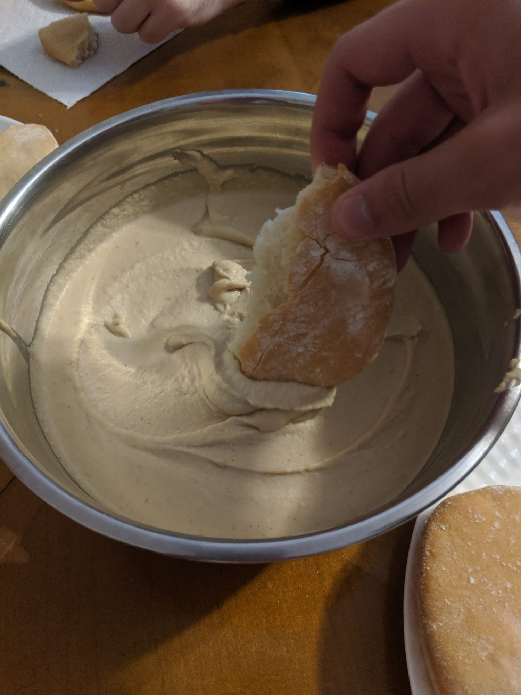

Better Hummus
Ingredients
- 1 1/2 cups cooked chickpeas
1 can, rinsed and drained, or 1/2 cup dried chickpeas - 1/2 tsp baking soda
Only required if you’re using canned chickpeas - 1/4 cup lemon juice
~2 fresh lemons, more to taste - 1 medium/large garlic clove
I recommend a little more if you like raw garlic bite - 1/2 tsp fine sea salt
To taste - 1/2 cup tahini
- 2 Tbs ice water
More as needed - 1/2 tsp ground cumin
- 1 Tbs extra-virgin olive oil
Optional
- Your favorite hot sauce
Small amounts of very hot sauces are good for not diluting the texture - Oven-roasted garlic
I usually put 1 bulb in for a 2x batch - 1/4 cup lime juice
Replace the lemon juice with this for a more complex flavor
Instructions
-
Place the chickpeas in a medium saucepan and add the baking soda. Cover the chickpeas by several inches of water, then bring the mixture to a boil over high heat. Reduce heat if necessary to prevent overflow, for about 20 minutes, or until the chickpeas look bloated, their skins are falling off, and they’re quite soft.
Continue to step 2 while this boils.
After 20 minutes, in a fine-mesh strainer, drain the chickpeas and run cool water over them for about 30 seconds. Set aside (no need to peel the chickpeas for this recipe!).
-
Meanwhile, in a food processor or high-powered blender, combine the lemon juice (or lime juice), garlic and salt. Process until the garlic is very finely chopped, then let the mixture rest so the garlic flavor can mellow, ideally 10 minutes or longer.
-
Add the tahini to the food processor and blend until the mixture is thick and creamy, stopping to scrape down any tahini stuck to the sides and bottom of the processor as necessary. Pro tip: stir your tahini well before blending to ensure a proper oil to solid ratio.
-
If your tahini mixture is clumping, drizzle in the ice water while blending to smooth it out. Scrape down the food processor as necessary, and blend until the mixture is ultra smooth and creamy, but retains its shape when disturbed. It’s important not to add too much water now, as it can always be added in the end to loosen up your hummus if needed. Adding too much liquid can lead to a loose hummus which isn’t ideal for dipping.
-
Add the cumin and the drained, over-cooked chickpeas to the food processor. Optionally add roasted garlic. While blending, drizzle in the olive oil. Blend until the mixture is super smooth, scraping down the sides of the processor as necessary, about 2 minutes. Taste, and add more ice water or lemon/lime juice as necessary to achieve a super creamy texture.
-
Optional: It’s common to add another ¼ teaspoon salt for more overall flavor and another tablespoon of lemon juice for extra zing. Optionally add a few drops of your favorite hot sauce, continue blending, and taste again to create a spicy hummus. I recommend the Torchbearer Garlic Reaper hot sauce, in particular.
-
Scrape the hummus into a serving bowl or platter, and use a spoon to create nice swooshes on top. Top with garnishes of your choice, and serve. Leftover hummus keeps well in the refrigerator, covered, for up to 1 week.